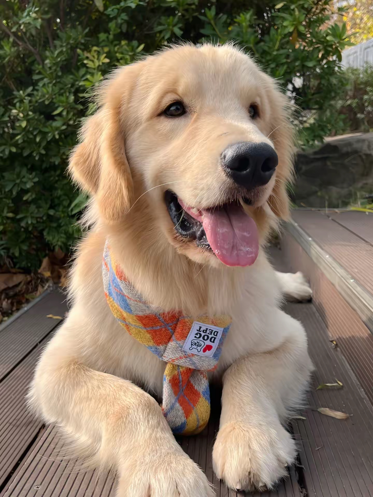
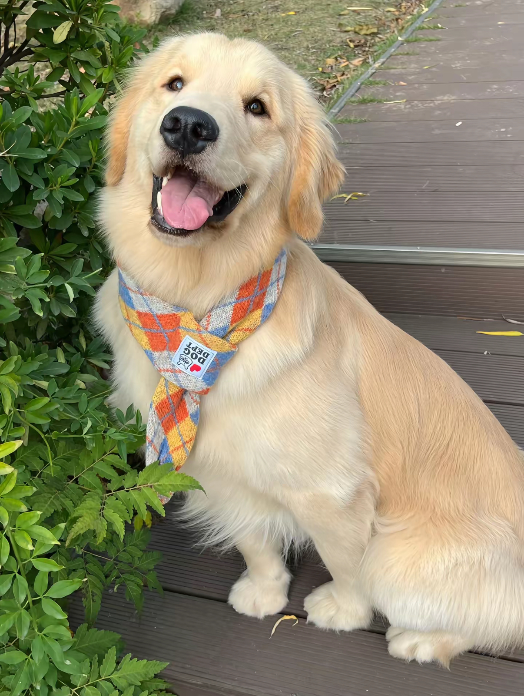
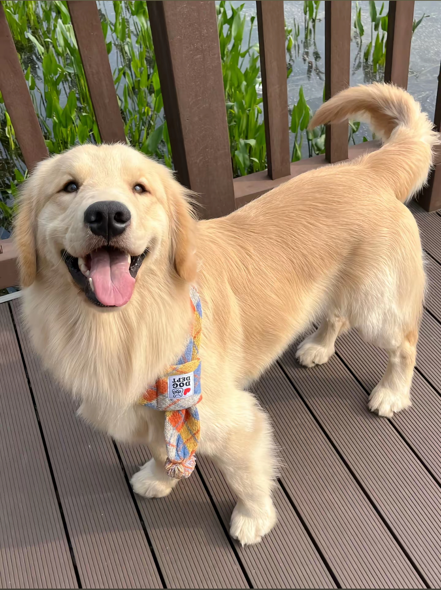

店狗塔西 🐶
歡迎來到我們的寵物友善餐廳，這裡有一位特別的成員——「塔西」。 塔西是一隻可愛的黃金獵犬，性格溫順，喜歡和顧客互動。
牠的名字來自於計程車的「taxi」，如同計程車的黃色， 塔西以牠明亮的毛色和陽光般的個性，為這個地方帶來溫暖與歡笑。
塔西喜歡陪伴每位來訪的朋友，無論是人類還是毛孩， 總能成為最佳的玩伴與陪伴者。在這裡，塔西不僅是一隻寵物， 更是我們大家的好朋友，期待與您一起分享美味的餐點和美好的時光。 別忘了來跟塔西打招呼喔！


